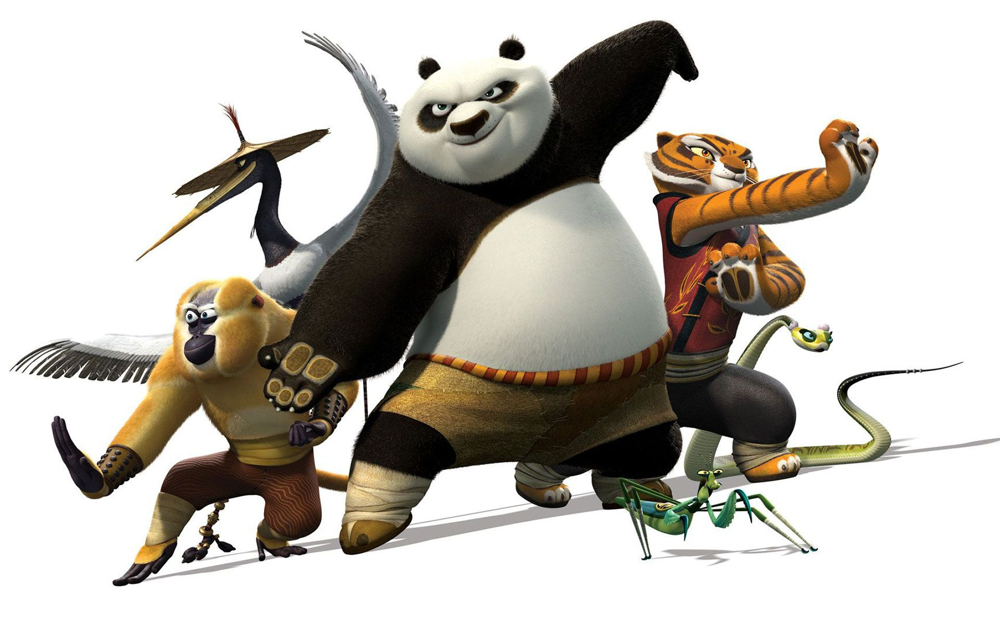

About Po
Po is a fat panda that is somehow chosen to be the legendary dragon warrior. Motivated by food, he is trained up by master Shifu in order to take on the notorious Tai Long. After finding that there is no secret ingredient, Po beats Tai Long through a mixture of sheer luck and chubbiness.
Po and the Furious Five
Characteristics
- Fat
- Loves Food
- Clumsy
- Radiates pure death vibes
Friends
Po has always had his dad, but during the movie, he also befriends Shifu and the Furious Five
- His Dad
- Master Ugwe
- Master Shifu
- Tigress
- Crane
- Monkey
- Mantis
- Viper